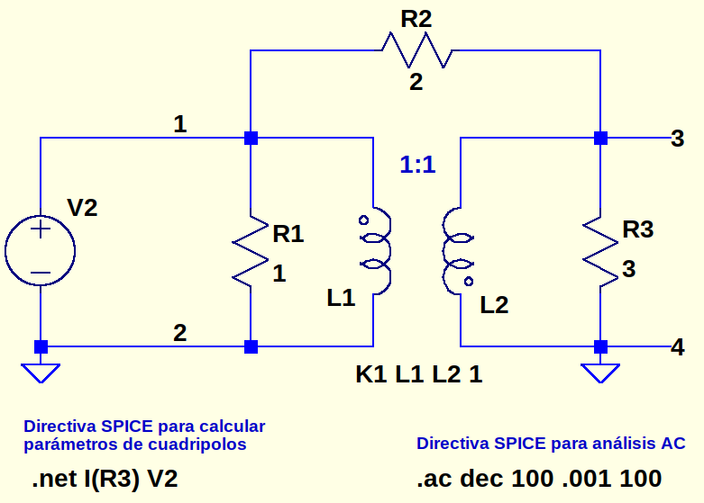
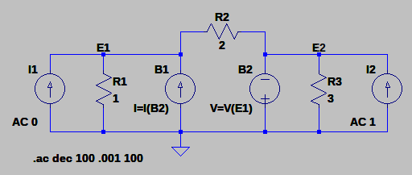
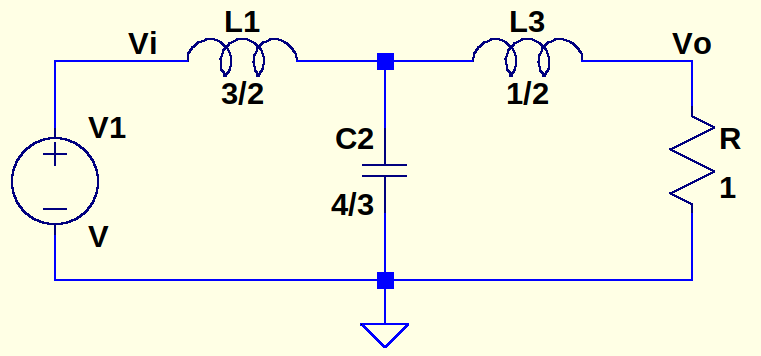
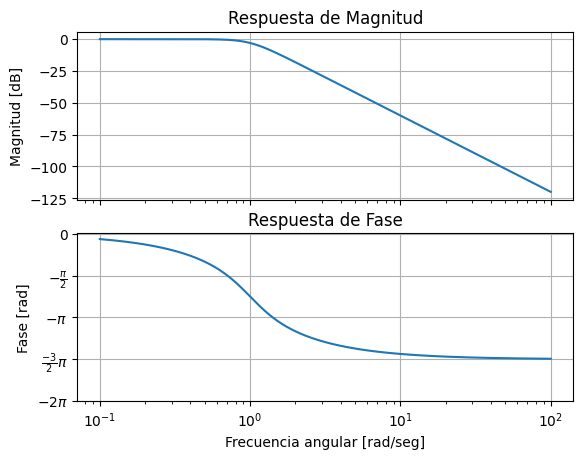
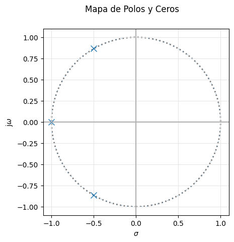

TP Semanal 7
Ejercicio 1:
Para el siguiente cuadripolo se pide calcular los parámetros Z.

Circuito equivalente

Resolveré por Análisis Nodal Modificado
[94]:
from IPython.display import IFrame
IFrame("./tp-semanal-7.pdf", width="100%", height="600")
[94]:
[84]:
import sympy as sp
# Definimos las variables simbólicas
G1, G2, G3, n, I1, I2 = sp.symbols('G1 G2 G3 n I1 I2')
# Creamos la matriz simbólica 2x2
matriz_A = sp.Matrix([[G1 + G2, -G2, 0, 0, -1/n],
[-G2, G2 + G3, 0, 0, -1],
[0, 0, 0, -1, 1],
[-1/n, 0, -1, 0, 0],
[0, -1, +1, 0, 0]])
# matriz_A = matriz_A.subs({n: 1, G1: 1, G2: .5, G3: 1/3})
matriz_A = matriz_A.subs({n: 1})
matriz_C = sp.Matrix([I1,I2,0,0,0])
# Mostramos la matriz original y su inversa
print ("matriz:\n")
sp.pprint(matriz_A)
# Calculamos la inversa de la matriz
matriz_inversa = matriz_A.inv()
matriz_B = matriz_inversa * matriz_C
print ("\nmatriz Z:\n")
matriz_Z = sp.Matrix([[matriz_B[0].subs({I2: 0})/I1, matriz_B[0].subs({I1:0})/I2],
[matriz_B[1].subs({I2:0})/I1, matriz_B[1].subs({I1: 0})/I2]])
sp.pprint(matriz_Z)
matriz:
⎡G₁ + G₂ -G₂ 0 0 -1⎤
⎢ ⎥
⎢ -G₂ G₂ + G₃ 0 0 -1⎥
⎢ ⎥
⎢ 0 0 0 -1 1 ⎥
⎢ ⎥
⎢ -1 0 -1 0 0 ⎥
⎢ ⎥
⎣ 0 -1 1 0 0 ⎦
matriz Z:
⎡ 1 -1 ⎤
⎢────────────── ──────────────⎥
⎢G₁ + 4⋅G₂ + G₃ G₁ + 4⋅G₂ + G₃⎥
⎢ ⎥
⎢ -1 1 ⎥
⎢────────────── ──────────────⎥
⎣G₁ + 4⋅G₂ + G₃ G₁ + 4⋅G₂ + G₃⎦
Ejercicio 2:
Dado el siguiente circuito:

👉 Obtener la transferencia de tensión \(\frac{V_o}{V_i}\) por método de cuadripolos (se sugiere referirse a alguno de los métodos de interconexión ya vistos). Ayuda: si \(C_2=\frac{4}{3}\) (se utilizó 1.333 para la simulación), los polos de la transferencia están ubicados sobre una circunferencia de radio unitario.
👉 Construya la matriz de admitancia indefinida (MAI) del circuito.
👉 Compute la misma transferencia de tensiónfracción V subíndice o entre V subíndice i mediante MAI.
👉 Verifique la transferencia mediante Análisis Nodal Modificado (MNA).
[93]:
import sympy as sp
from scipy import signal as sig
import numpy as np
from matplotlib import pyplot as plt
from pytc2.sistemas_lineales import bodePlot, pzmap, pretty_print_lti
# Definimos las variables simbólicas
S = sp.symbols('S')
matriz_A = sp.Matrix([[1+2*S**2, 1.5*S],[4/3*S, 1]])
matriz_B = sp.Matrix([[1+.5*S, .5*S],[1, 1]])
matriz_T = matriz_A * matriz_B
transferencia = 1/matriz_T[0,0]
transferencia = sp.expand(transferencia)
# sp.pprint(transferencia)
cociente, residuo = transferencia.as_numer_denom()
coef_cociente = sp.Poly(cociente, S).all_coeffs()
coef_residuo = sp.Poly(residuo, S).all_coeffs()
# # Función para igualar el tamaño
# def igualar_tamano(array, max_len):
# return np.concatenate([np.zeros(max_len - len(array)),array])
# # Igualar los tamaños
# coef_cociente = igualar_tamano(coef_cociente, len(coef_residuo))
num = np.array(coef_cociente, dtype=float)
den = np.array(coef_residuo, dtype=float)
display(Math("T(s) = " + pretty_print_lti(num, den, displaystr=False)))
H1 = sig.TransferFunction(num, den)
fig1, axs = bodePlot(H1) # Obtener la figura y las subtramas
pzmap(H1)
$\displaystyle T(s) = \frac{ 1 }{s^3 + s^2 \,\, 2 + s \,\, 2 + 1 }$
[93]:
(2, <Axes: xlabel='$\\sigma$', ylabel='j$\\omega$'>)


Verifico por Análisis Nodal Modificado
[86]:
import sympy as sp
# Definimos las variables simbólicas
L1, L3, C2, S, G, E = sp.symbols('L1 L3 C2 S G E')
# Creamos la matriz simbólica 2x2
matriz_A = sp.Matrix([[S*C2, 0, 0, -1, 1, 0],
[0, G, 0, 0, -1, 0],
[0, 0, 0, 1, 0, 1],
[-1, 0, 1, -S*L1, 0, 0],
[1, -1, 0, 0, -S*L3, 0],
[0, 0, 1, 0, 0, 0]])
matriz_C = sp.Matrix([0, 0, 0, 0, 0, E])
matriz_B = matriz_A.inv() * matriz_C
print ("\nmatriz_A:\n")
sp.pprint(matriz_A)
print ("\ntransferencia:\n")
sp.pprint((matriz_B[1]/E).subs({L1: 1.5, L3: .5, C2: 4/3, G:1}))
matriz_A:
⎡C₂⋅S 0 0 -1 1 0⎤
⎢ ⎥
⎢ 0 G 0 0 -1 0⎥
⎢ ⎥
⎢ 0 0 0 1 0 1⎥
⎢ ⎥
⎢ -1 0 1 -L₁⋅S 0 0⎥
⎢ ⎥
⎢ 1 -1 0 0 -L₃⋅S 0⎥
⎢ ⎥
⎣ 0 0 1 0 0 0⎦
transferencia:
1
───────────────────────────
3 2
1.0⋅S + 2.0⋅S + 2.0⋅S + 1